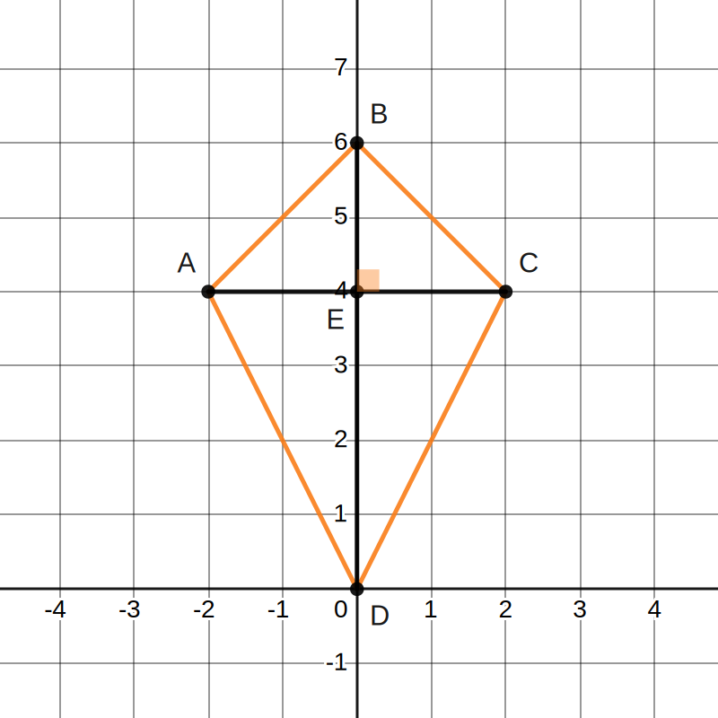
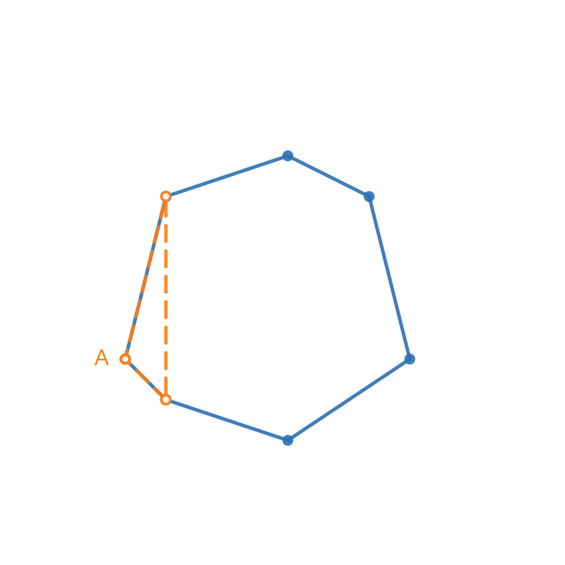
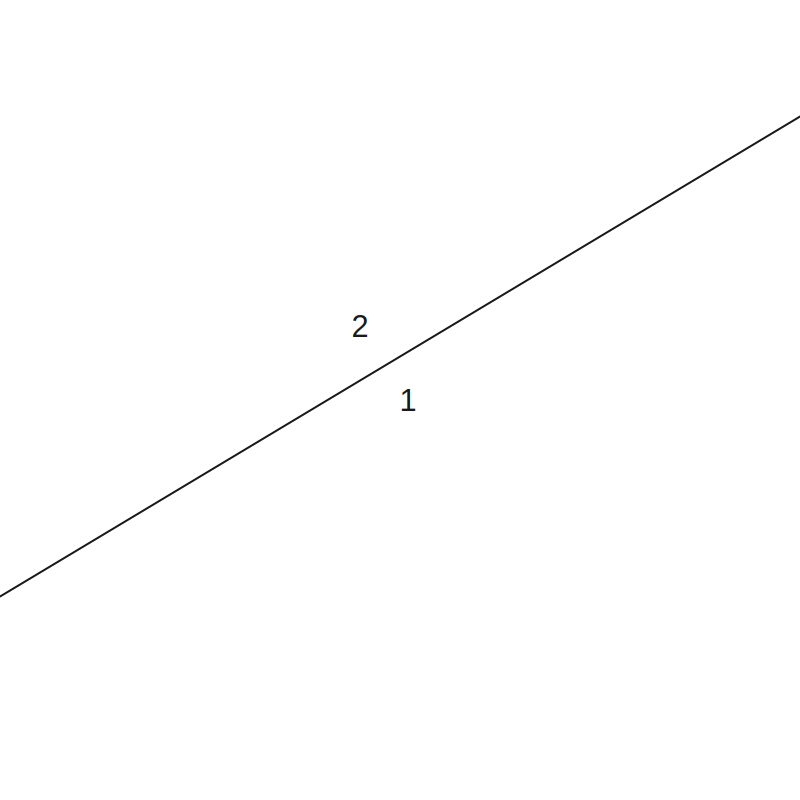
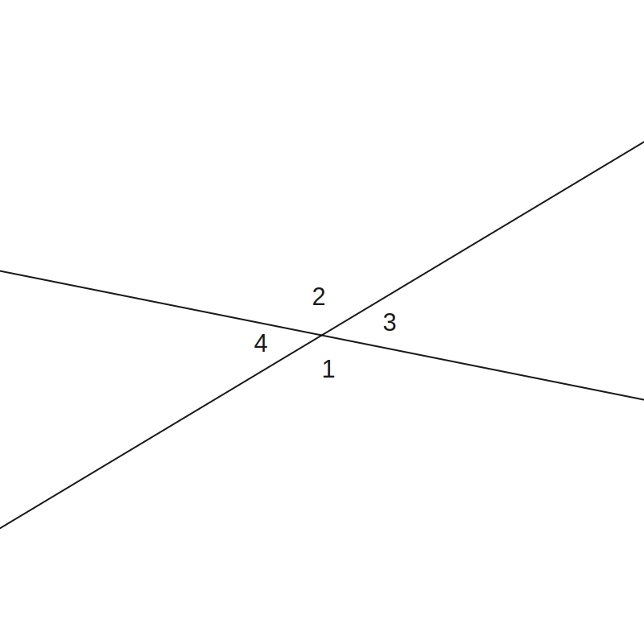
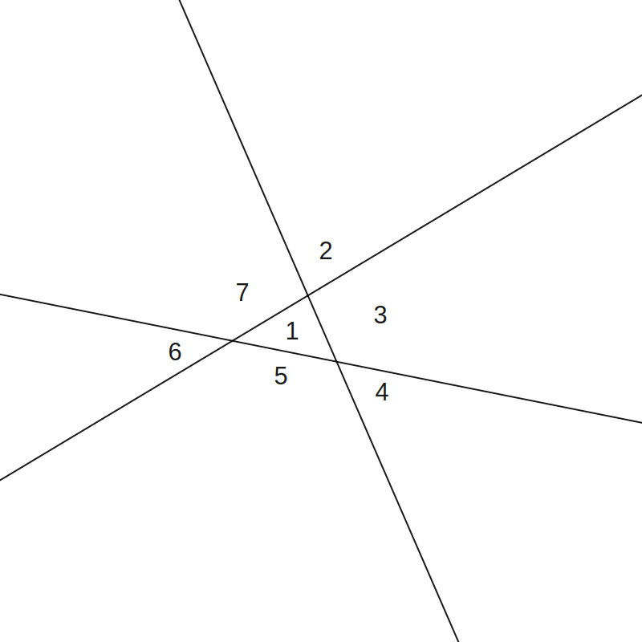
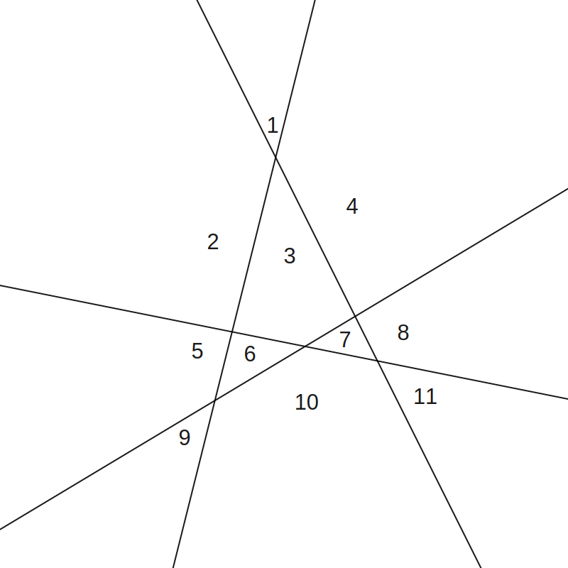
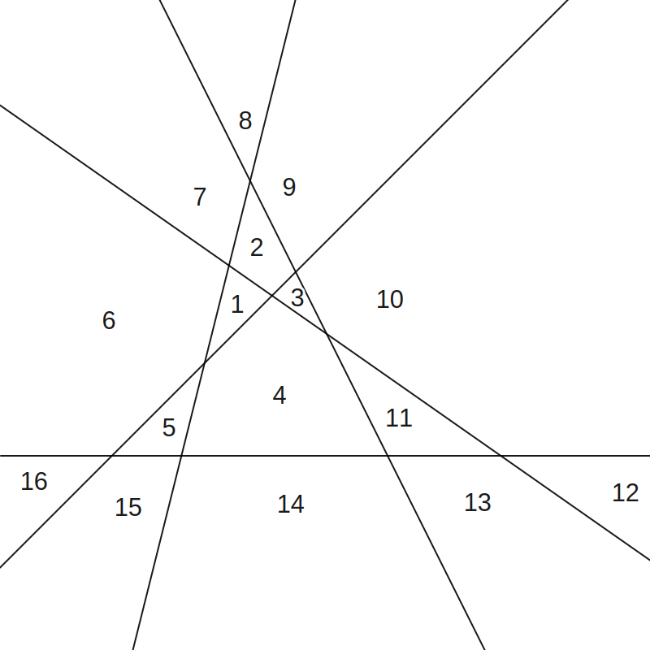

(a)
Prove the following identities. These are required proofs for this course.
Let z1=a+bi=r1(cosθ+isinθ)
and z2=c+di=r2(cosϕ+isinϕ).
Note: you may wish to write both z1 and z2 in exponential form.
(b)
Prove Euler's formula, that is, cosx+isinx=eix
and hence evalulate eiπ (known as Euler's identity).
f(x)=eixcosx+isinx =e−ix(cosx+isinx) f′(x)=−ie−ix(cosx+isinx)+e−ix(icosx−sinx) =−e−ix(icosx−sinx)+e−ix(icosx−sinx) =0
Therefore f(x) is a constant. f(0)=1, meaning that f(x)=1
Therefore, 1=eixcosx+isinx eix=cosx+isinx
Hence, eiπ=cosπ+isinπ=−1
Question 2 - Proof Techniques
Using any of the proof techniques we have covered, prove the following statements.
Clearly state which method you are using.
(a) The product of two consecutive even counting numbers is a multiple of 4.
By direct proof: RTP:2n(2n+2)=4M, where n,M∈Z LHS=4n2+4n =4(n2+n) =RHS
(b)∀a,b∈Z,a2=b2, then a=b.
Disprove by counterexample:
If a=−x,b=x,x∈Z
Then a2=b2 is true, but a=b
Therefore the statement is false.
(c) There exists a number which is half the sum of its positive factors.
Proof by example: 6 is such a number. 1+2+3+6=12
212=6
(d) The number 5 is irrational.
Proof by contradiction: 5=ba, where a,b∈Z and are co-prime.
5=(ba)2 5b2=a2
Therefore, both a2 and a are divisible by 5.
Let a=5k,k∈Z 5b2=(5k)2 b2=5k2
Therefore b is divisible by 5, which is a contradiction
as ba is meant to be in simplest form.
This is a problem because this implies there are an infinite set of decreasing integer pairs
that represent the equivalent fraction, which is impossible, as 1 is the smallest integer.
∴5 is irrational by contradiction.
(e) Within any group of n≥2 people, there are at least two people who have met with the same number of people.
There are a maximum of n−1 people to meet, as meeting yourself is not counted.
And assuming that meeting another person also means they meet you,
then according to the pigeon-hole principle, this means there will always be at least 2 people who have met
the same number of people.
For the case n=2:
Meeting no-one means that the other person also meets no-one.
Meeting 1 person means that 1 person also meets you.
Question 3 - The Triangle Inequality
(a) State the triangle inequality both in words and using mathematical symbols.
The triangle inequality states that for any triangle,
the length sum of any two sides will be greater or equal to that of the third side.
z≤x+y, where x,y,z are the side lengths of a triangle.
Or: ∣x+y∣≤∣x∣+∣y∣
(b) Prove the triangle inequality using two different methods. You are encouraged to research this.
Include references to any sources you used.
Because ∣x∣2=x2, and ∣x∣≥x LHS≥a2+2ab+b2 =(a+b)2 =∣a+b∣2 =RHS
Therefore, (∣a∣+∣b∣)2≥∣a+b∣2
and ∣a∣+∣b∣≥∣a+b∣, as required.
(c) Summarise each of the proofs from (b) and highlight the similarities and differences between the two proofs.
Proof 1 is a case analysis that uses the fact that the absolute number must
be bigger or equal, or that ±x≤∣±x∣. Case 2 is used to show that
the sign of x,y is not relevant, meaning that the absolutes of those values
can be taken to be equivalent.
Proof 2 squares both sides of the inequality to allow binomial expansion to prove that LHS=RHS.
(d) Which method do you prefer, and why?
I prefer Proof 2, as it is more algebraically direct, with no need
to account for edge cases such as negatives for a,b in case 2.
Question 4 - Quadrilateral and Polygon Properties
(a.i) Prove that the axis of a kite is the perpendicular bisector of the other diagonal.
Definition of a kite:
A quadrilateral that has 2 pairs of equal-length sides with equal sides adjacent to each other.
(See graph in question a.ii)
Let E be the crossing point of AC and BD.
As AB=CB,AD=CD, and BD being a common side, △ABD≡△CBD (SSS triangle congruency)
From the SSS congruency,
as ∠ABD=∠ABE,∠CBD=∠CBE,
and ∠ABE=∠CBE,AB=CB,BE being a common side, △ABE≡△CBE (SSA triangle congruency)
From the SSA congruency, ∠BEC=∠BEA and AE=EC.
Because the two angles add up to 180° (a straight line) and are equal,
they are both 90° (supplementary angles).
Therefore AC is perpendicular to BD.
The bisection is proven by AE=EC, as E is the crossing point of the two lines.
Therefore AC bisects, and is perpendicular, to BD.
(a.ii) Demonstrate this using Geogebra or similar technology.

Here, AE=EC=2 on either side of the bisecting BD line.
(b.i) Prove, by mathematical induction,
that the interior angle sum of an n-gon is equal to (n−2)×180 degrees for all integers, n≥3.
Let f(n) be the angle sum of an n-sided polygon: RTP:f(n)=(n−2)×180.
Prove for the first case (n=3): LHS=180° (angle sum of a triangle) RHS=(3−2)×180=180° =LHS
Assume true for n=k: f(k)=(k−2)×180
Prove for n=k+1: RTP:f(k+1)=(k−1)×180.
Take three consecutive vertices from some k+1 sided polygon, and
construct a triangle.

The angle sum of the remaining polygon (the polygon without point A) can
be expressed by f(k).
Therefore we can express the angle sum of this k+1 sided polygon as such: f(k+1)=f(k)+f(3) =(k−2)×180+180, from the assumption for f(k). =(k−1)×180 =RHS
Therefore, the angle sum equaling (n−2)×180 is proven true by induction.
(b.ii) Hence prove that the exterior angle sum of an n-gon is 360°.
In an n-gon, there are n exterior angles.
As the exterior angle equals 180° minus the interior angle,
the sum of the exterior angles can be expressed as: 180n−(n−2)×180 =180n−180n+360 =360°, as required.
(c)
Suppose we draw on a plane n lines in 'general position', i.e. with no three concurrent and no two parallel.
Let Sn be the number of regions into which these lines divide the plane.
(c.i) By drawing diagrams, find S1,S2,S3,S4 and S5.





S1=2,S2=4,S3=7,S4=11,S5=16
(c.ii) From these results, make a conjecture about a formula for Sn.
Sn=n+Sn−1,S1=2
Also seems to fit 2n2+n+2
(c.iii) Prove this formula by mathematical induction.
We can prove the formula given the recursive definition.
The first 5 cases are true: n=1:212+1+2=2 n=2:222+2+2=4 n=3:232+3+2=7 n=4:242+4+2=11 n=5:252+5+2=16